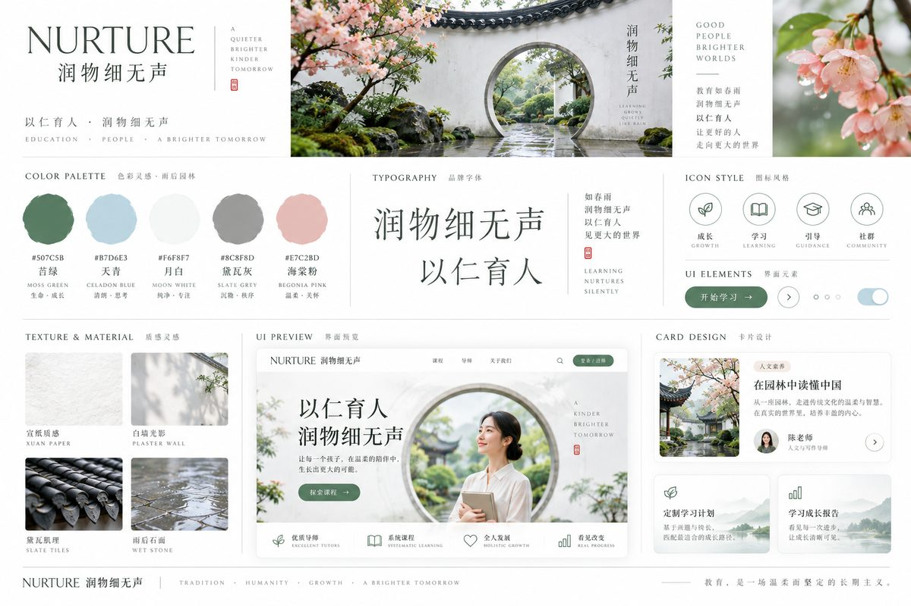
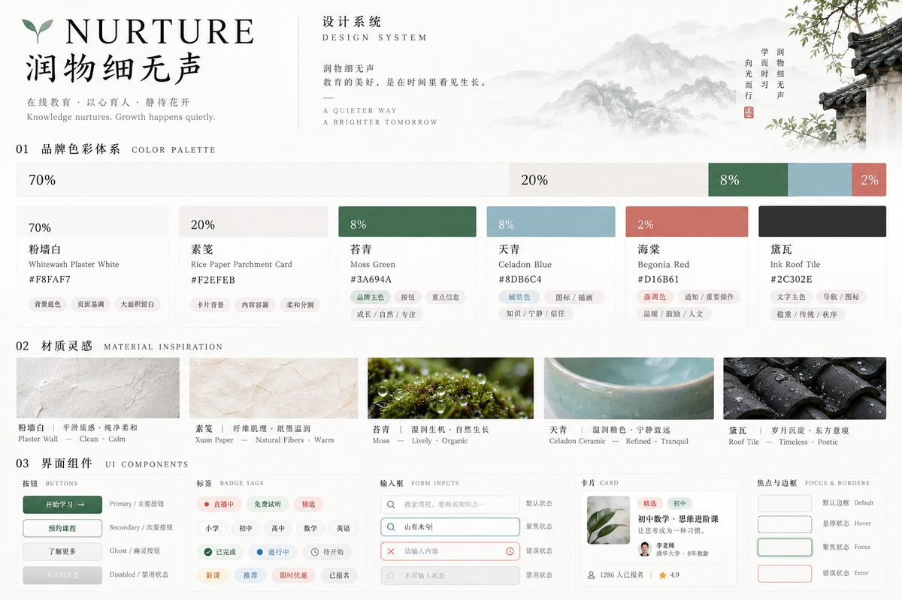
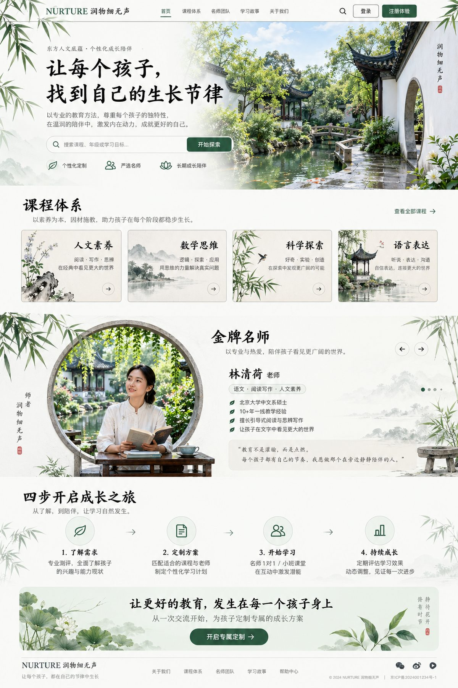
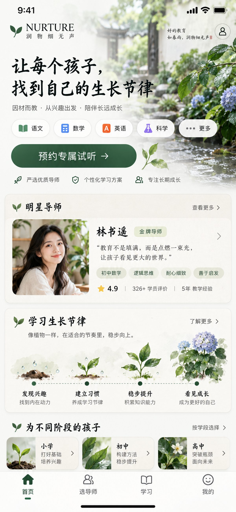
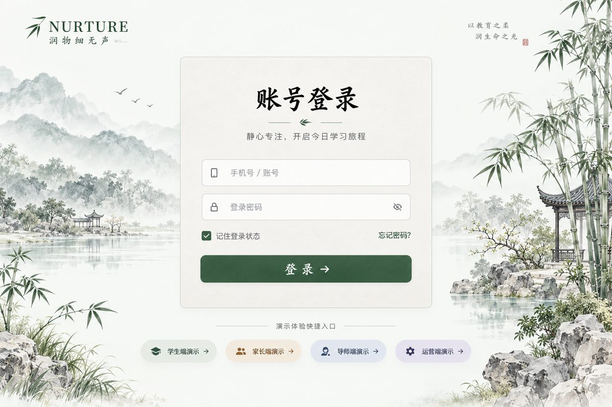
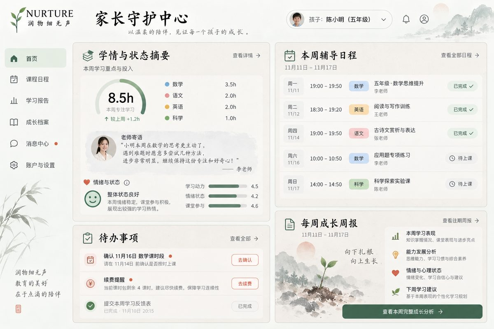
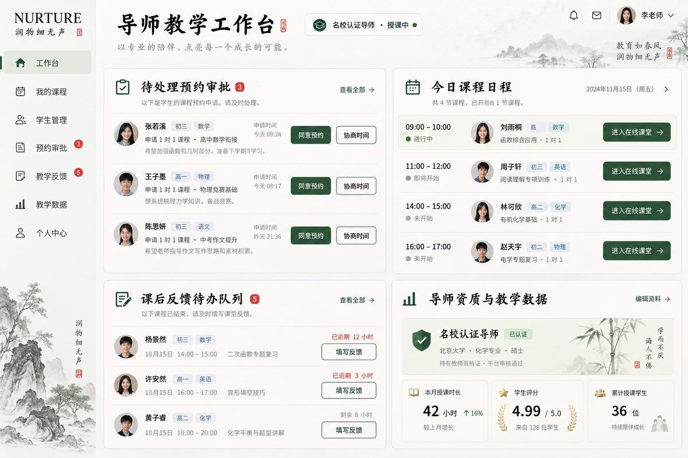
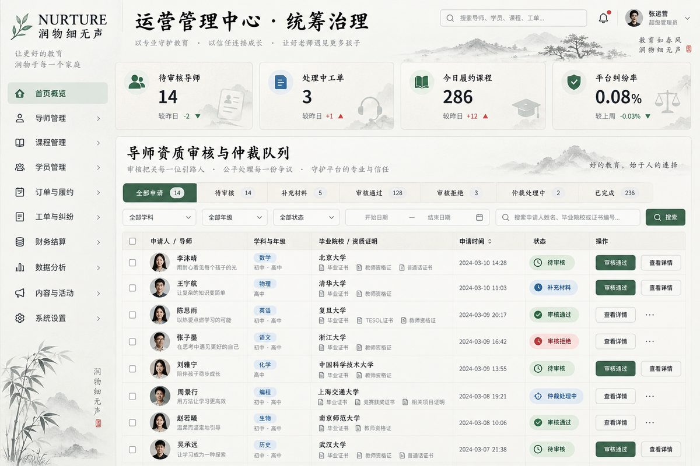
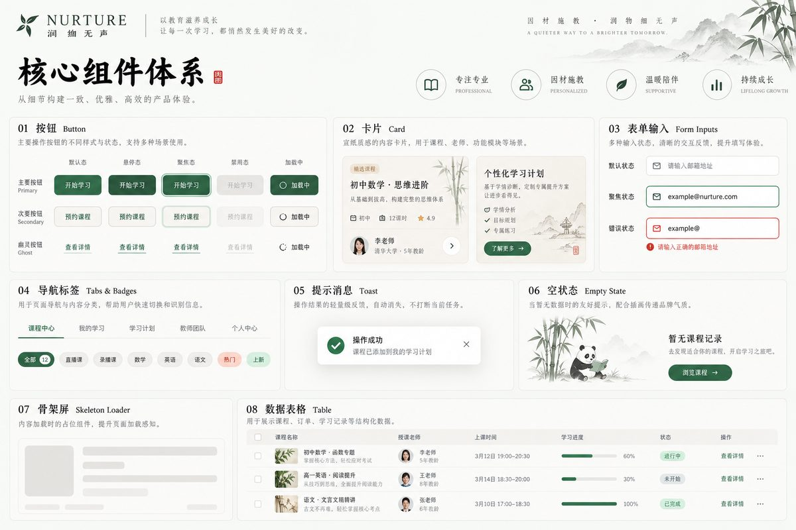

UI/UX REDESIGN WORKSHOP · 2026-10-11
苏州园林，雨后初晴
粉墙黛瓦 · 雨后青苔 · 雨过天青 · 框景借景 · 留白。
本页是「视觉工作坊」：所有候选方向、设计令牌与组件均以真实 HTML/CSS 呈现，可点、可悬停、可键盘操作，
并遵循 prefers-reduced-motion。整体重做尚未开始——看完这里，再定方向。
色彩比例：粉墙白 70% ｜ 素笺卡片 20% ｜ 苔青+天青 ≤8% ｜ 海棠 ≤2%。全站无深色底区块；标题用楷体，正文用系统无衬线。
01 · DIRECTIONS
美术方向候选
由视觉总监代理生图探索：气质板 + 色彩材质卡 + 三个首屏方向（A 月洞门借景 / B 素笺留白 / C 雨雾浸润·海棠漏窗）。框景（月洞门/海棠漏窗）全站至多 2 处。


方向 B 的纯 HTML 实景小样（非图片，真实渲染）
02 · DESIGN TOKENS
设计令牌
全部令牌定义在 assets/tokens.css，按用户确认的「加深版」调色：苔青饱满、墨色足、层级分明。
色彩
状态语义色
字体（楷体标题 + 无衬线正文）
H1 · 润物细无声（楷体）
H2 · 好雨知时节，当春乃发生（楷体）
H3 · 界面小节标题（无衬线 Semi-bold）
正文 · 系统无衬线，行高 1.7。清晰的阅读节奏能显著减轻视线的跳跃负担，长段落也不使用楷体。
间距与边框
8pt 呼吸步进：8 / 16 / 24 / 32 / 48 / 64 / 96px。区块上下间距 ≥96px。全站用 1px 黛瓦细线 + 纸面微漫反射，不用重阴影。
03 · COMPONENTS
组件实验室
以下全部是活组件：可点击、可悬停、可用键盘 Tab 聚焦（聚焦环为 2px 白 + 2px 苔青双环）。
按钮（点击有苔青涟漪）
素笺卡片（悬停：上移 2px，边框太湖石 → 苔青）
今日任务
完成数学练习卷第三章
下一节课
物理 · 周六 14:00
成长摘要
本周专注 6 次
徽章与标签
表单（含错误态：不只报错，还告诉用户怎么继续）
Tabs / Toast / 空状态 / 骨架屏
这里还空着，像雨前的小院
还没有课后任务。完成第一节课后，老师布置的任务会出现在这里。
骨架屏（加载中占位）
数据表格（运营/列表页基底）
| 预约编号 | 学生 | 课程 | 时间 | 状态 | 操作 |
|---|---|---|---|---|---|
| B-202610 | 王小明 | 数学试听 | 周六 10:00 | 待确认 | |
| B-202609 | 李思思 | 物理正式课 | 周六 14:00 | 已确认 | |
| B-202608 | 陈果 | 英语正式课 | 周日 09:30 | 已完成 |
04 · MOTION
动效实验室：「润物」而非炫技
允许
禁止与降级
05 · PAGE CONCEPTS
关键页面方案图
视觉总监按「楷体标题 + 色彩加深」最终约束生成中，生成完毕会自动出现在下方。每张图都是候选方案，看完可指认修改点。







提示：图片生成需要数分钟。若某张暂未出现，稍后刷新本页即可。
方向满意吗？
确认方向与组件语言后，再进入全站实施；每一步都先出图、再落码、后验收。